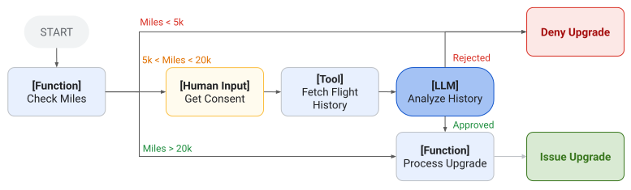

Learning outcomes
- Understand ADK building blocks and project structure.
- Implement a runnable ADK agent with tools and configuration.
- Evaluate execution behavior, observability, and deployment readiness.
Topics
ADK architecture, environment setup, tool integration, runtime patterns, debugging flow, and deployment considerations.
1. Get started with ADK Python
1.1 Environment and project setup
ADK Python starts with a supported Python 3.10+ environment and an isolated virtual environment. Install the framework with pip install google-adk, then use adk create my_agent to generate a minimal project containing the agent module, package initializer, and local environment configuration.
1.2 First agent and local execution
The generated agent.py exposes a root_agent with a model, name, description, instruction, and optional tools. Configure the selected model credentials in the local .env file, run the agent from the terminal with adk run my_agent, and use adk web --port 8000 for an interactive development and debugging UI. The web interface is intended for development, not production hosting.
Reference: ADK Python Quickstart.
2. Simple agents
2.1 Agent identity and purpose
A simple ADK agent is an LlmAgent (also available as Agent) that delegates reasoning, tool selection, and response generation to a language model. Its required identity is defined by a name and model; a concise description is strongly recommended because it helps other agents select the right specialist in a multi-agent system.
2.2 Instructions, tools, and controlled behavior
The instruction is the agent contract: it states the goal, persona, constraints, expected output, and rules for using tools. Tools can be Python functions, ADK BaseTool implementations, or other agents exposed through AgentTool. Clear names, descriptions, and schemas help the model choose and call each tool correctly.
2.3 Configuration and evaluation
Simple agents can be refined with generation settings such as temperature, token limits, and safety controls, as well as structured input and output schemas, context variables, planners, and code execution. Because model-driven behavior is non-deterministic, evaluate representative tasks and tool calls rather than relying on a single successful response.
Reference: ADK Simple Agents (LlmAgent).
3. Framework comparison for model-portable agents
3.1 LangChain/LangGraph and ADK 2.0
LangChain/LangGraph and Google Agent Development Kit 2.0 can both support tool-using and multi-agent systems, but they make different architectural choices. LangChain provides a broad model and integration abstraction, while LangGraph makes the execution graph, state transitions, checkpoints, and interrupts explicit. ADK 2.0 introduces a graph-based Workflow Runtime with agents, tools, and functions represented as workflow nodes; it is optimized for Gemini but can use non-Gemini models through its model adapters, including the LiteLLM integration.
The table is intended as a design aid rather than a winner-takes-all comparison. The portable part of an agent should be the task contract, tool schemas, state model, evaluation set, and orchestration intent. Provider-specific model construction, authentication, streaming details, and deployment hooks should stay behind an adapter.
| Dimension | LangChain / LangGraph | ADK 2.0 | Implication for model switching |
|---|---|---|---|
| Primary abstraction | LangChain standardizes models, messages, tools, and runnable components; LangGraph composes them as a stateful graph. | ADK agents, tools, functions, and workflow nodes are composed through the ADK runtime and its graph-based workflow model. | Keep a framework-neutral agent contract and map it to the selected runtime. |
| Model providers | Large provider ecosystem with dedicated integrations, including Google, OpenAI-compatible endpoints, Anthropic, and Ollama. | Gemini is the first-class path; non-Gemini models can be reached through LiteLlm and supported provider adapters. |
Use a ModelProvider factory and configure MODEL_BACKEND outside the agent logic. |
| Gemini → Ollama / DeepSeek | Usually a model constructor change, for example ChatGoogleGenerativeAI to ChatOllama or an OpenAI-compatible client. |
Use the native Gemini model for Gemini and LiteLlm(model="ollama_chat/...") or the relevant provider prefix for other models. |
Switch through configuration, but test tool calling, JSON schema support, context limits, and streaming for every target. |
| Orchestration | LangGraph gives explicit nodes, edges, state, conditional routing, persistence, interrupts, and human-in-the-loop control. | ADK 2.0 Workflow Runtime provides graph, dynamic, and collaborative workflows with runtime-managed execution state. | Represent routing as a framework-neutral workflow specification before implementing it in either graph runtime. |
| Tools and MCP | Tools are Python callables or structured tool objects; MCP integrations can expose remote tools and resources. | Tools are agent capabilities; ADK also integrates MCP tools and resources and provides Google-oriented tools. | Define tools with stable JSON schemas and avoid provider-specific response formats in business logic. |
| Ingestion, RAG, and knowledge sources | Rich ecosystem of document loaders, Wikipedia/web loaders, text splitters, embedding integrations, vector stores, and retrievers. | The core is an agent runtime, not an equivalent catalog of chunking and embedding utilities. ADK provides tools, Google Search, MCP, and integration points; ingestion, indexing, and retrieval are normally supplied by application code or external services. | Keep the knowledge pipeline as a separate data layer and expose retrieval through a stable tool or MCP interface. The same RAG backend can then serve LangGraph or ADK. |
| State and memory | Graph state, checkpoints, stores, and memory integrations are explicit parts of the LangGraph design. | Sessions, context, events, and workflow state are managed through ADK runtime concepts. | Separate durable domain state from transient conversation state so migration does not require a data rewrite. |
| Structured output | Uses provider integrations, tool calling, output parsers, and schema-aware runnables. | Uses ADK agent configuration, model responses, tools, and adapter capabilities; support can vary by provider. | Validate at the application boundary with Pydantic/JSON Schema and implement a repair or escalation path. |
| Observability and evaluation | LangSmith and OpenTelemetry integrations are commonly used for traces, datasets, and evaluations. | ADK provides runtime events and Google Cloud-oriented deployment and observability paths, with third-party integrations available. | Keep evaluation datasets and trace assertions independent of the vendor dashboard. |
| Deployment orientation | Flexible: self-hosted services, containers, LangGraph deployments, or custom infrastructure. | Strong path to Google Cloud and Agent Runtime, while local execution and other integrations remain possible. | Keep the runtime boundary thin so a cloud deployment choice does not determine the model choice. |
| Main portability risk | Provider differences are hidden by abstractions but can surface in tool-calling, streaming, token limits, and error metadata. | Non-Gemini models may require LiteLLM and can expose a smaller common capability set than native Gemini. | Declare required capabilities and run a conformance test suite before promoting a new model. |
3.2 Recommended portable architecture
Place the model selector at the outer edge of the application. A configuration value such as MODEL_BACKEND=gemini, MODEL_BACKEND=ollama, or MODEL_BACKEND=deepseek should select a provider adapter; it should not change the coordinator's prompts, tool schemas, domain state, or evaluation cases. In practice, the factory returns the framework-specific model object while the rest of the agent receives only the common chat/tool interface.
Portability is not achieved by changing a model string alone. The replacement model must pass capability checks for structured tool calls, parallel tool calls if required, JSON output, maximum context, streaming, retries, and refusal/error handling. A small conformance suite should run the same scenarios against Gemini, an Ollama-served local model, and DeepSeek before switching production traffic. If a capability is missing, the adapter should fail explicitly or select a degraded workflow rather than silently producing an invalid result.
Important distinction: ADK can use a Wikipedia loader, a chunker, an embedding model, or a vector database, but these are not automatically ADK utilities in the same sense as LangChain's integrations. A practical ADK design wraps the retrieval operation in a typed function tool, connects to an MCP server, or calls a managed search service. The agent sees a contract such as search_knowledge_base(query); the implementation behind that contract can use LangChain, a native vector database client, or a custom Python pipeline without changing the orchestration graph.
Practical rule: use LangChain/LangGraph when provider breadth and explicit graph control are the priority; use ADK 2.0 when its workflow runtime, Google tooling, and deployment ecosystem are the priority. In both cases, keep the agent contract, tools, state, tests, and safety gates independent from the selected model provider.
Reference points: ADK 2.0 workflow documentation, ADK LiteLLM adapter, and LangChain Ollama integration.
4. Graph-based workflow agents
4.1 Explicit nodes and edges
ADK graph workflows make the execution plan visible in code. A graph is composed of nodes connected by explicit edges; a node can be an LLM agent, a deterministic function, a tool, a human-input step, or another workflow. This lets the architecture alternate between probabilistic reasoning and deterministic operations without hiding the order inside a long prompt.
The graph is especially useful when a process has prerequisites, branches, approvals, or audit requirements. For example, a flight-upgrade workflow can check eligibility with a function, request human consent, fetch the customer history through a tool, ask an LLM to analyse the evidence, and then route to either “process upgrade” or “deny upgrade”. The model can reason about the evidence, but the workflow still controls which steps are possible and in what order.

4.2 Sequential data flow and typed contracts
In a sequential graph, the output of one node becomes the input of the next node. A function can therefore transform a model response into a structured object, and a subsequent agent can consume that object through an input schema instead of parsing free-form text. This makes intermediate data inspectable and reduces the amount of session-state plumbing needed for a simple pipeline.
A useful design practice is to give every important boundary a contract: the classifier returns an allowed route, the retrieval node returns evidence with metadata, and the approval node returns an explicit decision. The graph then becomes a set of testable interfaces rather than a collection of implicit prompt assumptions.
4.3 Routing, dynamic workflows, and limitations
Conditional routing maps a value emitted by a router node to one or more downstream branches. This supports deterministic handling for categories such as bug, customer support, or logistics, while dynamic workflows remain available when loops, recursion, or runtime-generated plans are too complex for a static graph. Prebuilt sequential, parallel, and loop workflow agents cover common patterns without requiring every edge to be assembled manually.
Graph workflows are not a universal replacement for all ADK features. The official documentation notes that some third-party integrations may not yet be compatible with graph-based workflows. For portability, isolate integrations behind tool nodes and test the complete graph with the selected model and runtime before deployment.
5. Dynamic workflows
5.1 Programmatic orchestration
Dynamic workflows are the ADK option for execution paths that are too variable or too complex for a static graph. Instead of declaring every possible edge in advance, an orchestrator node uses normal program logic such as if, while, recursion, and async/await to decide which child nodes to run and in which order. This is useful for iterative investigation, runtime-generated plans, and workflows whose next step depends on intermediate results.
In Python, the workflow is typically expressed with a @node decorator and ctx.run_node(). The orchestrator invokes an agent, function, or tool as a child node, receives its output, and passes that value to the next child. The application can therefore keep complex routing logic in ordinary Python while preserving ADK's execution, event, and checkpointing model.
5.2 Checkpointing and resume behavior
Dynamic workflows are designed to be resumable. ADK tracks child-node executions and can skip successful child nodes when an interrupted workflow resumes. An orchestrator that calls ctx.run_node() should be marked with rerun_on_resume=True; the orchestrator body is re-entered, while completed children are recovered from their checkpoints instead of being executed again unnecessarily.
This distinction matters when a workflow pauses for human input or encounters a transient failure. The node configuration must make the intended behavior explicit: re-enter the orchestrator to continue coordinating children, or hand the resume payload directly to the next node. Without that decision, a resumed workflow may duplicate side effects or lose the context needed to continue safely.
5.3 Dynamic data flow and selection criteria
ctx.run_node() returns the child result directly, so a dynamic workflow can pass typed values from one node to another without manually writing intermediate values into session state. A draft agent can return text, a formatting function can transform it, and a validation agent can inspect the transformed result. Pydantic models or equivalent schemas can make these boundaries explicit when the data is more structured.
Choose a dynamic workflow when the path depends on runtime information, the number of iterations is not known in advance, or the orchestration logic benefits from regular programming constructs. Choose a static graph when the process has a stable topology that should be visible, auditable, and validated as a fixed set of edges. Both styles can be combined: a static graph can invoke a dynamic sub-workflow for one complex stage.
Reference: ADK Dynamic Workflows.
6. Collaborative agent teams
6.1 Coordinator and specialized subagents
Collaborative workflows are designed for complex tasks that benefit from several agents with distinct responsibilities and relatively open-ended coordination. A coordinator agent delegates work to specialized subagents, collects their results, and decides what to do next. This differs from a fixed sequential workflow: the coordinator can choose which specialist to invoke based on the request and can return to a specialist when clarification or additional work is needed.
In ADK, subagents can be assigned an operating mode that constrains how they interact. chat allows full interaction and manual transfer, task allows clarification questions and returns automatically when the task is finished, and single_turn performs one bounded turn with no user interaction. The coordinator declares the subagents, and ADK creates delegation tools that allow it to route work to them.
6.2 Collaboration modes and control transfer
Mode selection is an architectural decision. Use single_turn for independent operations that can run in parallel, such as gathering weather and availability data. Use task when a specialist may need to ask the user a focused clarification question before completing its work. Use the default chat mode when the specialist should retain conversational control until an explicit handoff occurs.
Control transfer depends on how the subagent was invoked. A task agent used as a workflow node advances to the next graph node when it completes; the same task agent delegated by an LLM coordinator returns control to the originating coordinator after finish_task. Making this distinction explicit prevents a team from mixing graph transitions and agent delegation as if they had identical semantics.
6.3 Isolation, parallelism, and limitations
Task and single-turn agents operate in isolated session branches. Parallel specialists cannot see each other's intermediate events, so the coordinator must aggregate their outputs and pass any necessary context to a later synthesis step. This isolation improves separation of concerns and makes parallel work safer, but it also means that shared state must be designed rather than assumed.
Collaboration modes are intended for subagents, not for the root agent. Task-mode agents must be leaf agents and cannot themselves contain subagents. ADK Python 2.0 also documents that task mode is currently disabled inside graph-based workflows; use a coordinator with delegation or a dynamic workflow when that restriction applies.
Reference: ADK Collaborative Workflows.
7. Workflow patterns
7.1 Coordinator, sequential, and parallel patterns
ADK's workflow patterns are reusable architectural templates rather than rigid product features. A coordinator and dispatcher routes each request to a specialist; a sequential pipeline runs a known series of steps; and a parallel fan-out runs independent tasks concurrently before a gather or synthesis step combines their results. The correct pattern depends on whether the task needs adaptive routing, a fixed order, or lower latency through concurrency.
Sequential and parallel patterns make data ownership explicit. In a sequential pipeline, an earlier agent can publish a validated result under an output key for later agents to consume. In a fan-out and gather design, each branch should write to a distinct result location, and the gather agent should know which results are complete, missing, or conflicting before it synthesizes them.
7.2 Hierarchical, generate-and-review, and refinement patterns
Hierarchical task decomposition adds more than one coordination level: a high-level agent breaks the goal into areas, intermediate agents delegate specialized subtasks, and leaf agents perform bounded work. This structure is useful for large research or codebase tasks, but it requires clear role boundaries and explicit context transfer to prevent duplicated or incomplete coverage.
The generate-and-review pattern separates production from quality control. One agent creates a draft or candidate result, while another checks it against explicit criteria and either approves it or reports corrections. Iterative refinement repeats this cycle until a quality threshold is met or a safety bound is reached. The reviewer should return structured findings so that the next generation step addresses concrete defects rather than receiving an ambiguous request to “try again”.
7.3 Human-in-the-loop and pattern selection
Human-in-the-loop workflows insert an approval or clarification step where the model should not make an irreversible decision alone. The human interaction can be combined with sequential processing, conditional routing, or a review loop. For policy-sensitive actions, the approval boundary should be enforced by the workflow or tool layer instead of relying only on an instruction in the prompt.
A practical selection process starts with four questions: Is the route fixed or adaptive? Can subtasks run independently? Does the result need an explicit review pass? Is human approval required before a side effect? The answers lead to a sequential pipeline, parallel fan-out, coordinator, generate-and-review loop, or human-gated workflow. Patterns can be nested, but each nested boundary should expose a clear input, output, failure path, and completion condition.
Reference: ADK Workflow Patterns.
8. Guided lab: Google Skills ADK Labs
8.1 Recommended Learning Sequence
This compact sequence lists five Google Skills labs. Availability and access requirements vary by lab; the required Build Multi-Agent Systems with ADK lab is publicly available with a standard Google Skills account and does not require GEAR enrollment. When a lab can be launched, it provides a managed Google Cloud environment and temporary credentials, so a personal Gemini API key is not required.
| Order | Lab | Level | Duration | Credits |
|---|---|---|---|---|
| 1 | Engineer AI Agents with Agent Development Kit (ADK): Challenge Lab | Intermediate challenge | 1 hr 30 min | 5 |
| 2 | Use Agent Skills with Multi-Agent Systems: Challenge Lab | Advanced challenge | 1 hr 30 min | 1 |
| 3 | Google Skills ADK lab (focus 104687) | ADK lab | See catalog | See catalog |
| 4 | Required lab: Build Multi-Agent Systems with ADK | Advanced | 1 hr 30 min | 7 |
| 5 | Use Model Context Protocol (MCP) Tools with ADK Agents | Advanced | 1 hr 30 min | 7 |
Required course lab: Build Multi-Agent Systems with ADK is publicly available with a standard Google Skills account and does not require GEAR enrollment. It provides hands-on ADK 2 multi-agent examples covering parent and sub-agent relationships, session state, and sequential, loop, and parallel workflow agents.
Credit plan: Engineer AI Agents with Agent Development Kit (ADK): Challenge Lab currently lists 5 credits, Use Agent Skills with Multi-Agent Systems: Challenge Lab lists 1 credit, and both Build Multi-Agent Systems with ADK and Use Model Context Protocol (MCP) Tools with ADK Agents list 7 credits each. The third lab's duration and credit cost must be confirmed on its Google Skills page before classroom delivery. GENAI124 may return an access-denied or unavailable-resource message depending on the account. Sign in to Google Skills and open each lab to confirm current availability and requirements.
8.2 LiteLLM in ADK: a budget day-trip advisor
LiteLLM is a Python translation layer that exposes a common interface to models from different providers. In ADK, LiteLlm wraps a non-Gemini model and is passed to an Agent as its model. This example uses the library directly, without a LiteLLM Proxy: a project-root .env selects either DeepSeek V4 through deepseek/... or a local Ollama model through ollama_chat/.... The agent and its tools stay the same when the model changes; tool-calling quality still needs to be tested for each model.
The ADK budget day-trip advisor exercise in ch12/adk plans an inexpensive one-day trip from the user's starting city. Its DuckDuckGo function tool searches for transport, prices, opening hours, and attractions; its Open-Meteo function tool checks the destination forecast for the travel date. The agent then proposes a timed itinerary, an itemized per-person budget, source links, and an indoor alternative if the weather is poor. The repository README explains setup, the LLM_PROVIDER switch, and how to run the agent with adk run or adk web.

ch12/adk advisor in ADK Web: the event timeline shows travel-search and weather-forecast tool calls, while the trace identifies the DeepSeek model used for this run.Further reading: ADK LiteLLM model connector and ADK Ollama model setup.
9. Exercises
9.1 Practice tasks
Implement structured logging and error handling, then compare agent behavior before and after reliability improvements.
10. Deliverable
10.1 Submission output
An ADK-based agent repository with setup instructions, runnable examples, and a short operational runbook.
11. Key takeaways
- ADK provides a practical framework to structure reliable agent implementations.
- Tool wiring, observability, and failure handling are central to usable agents.
- The same workflow can be extended from local prototype to deployable service.
12. Sitography
12.1 ADK foundations and workflow documentation
- ADK Python Quickstart: installation, project creation, credentials, CLI execution, and local web development UI.
- ADK Simple Agents (LlmAgent): agent identity, instructions, tools, model configuration, context, schemas, planners, and code execution.
- ADK Graph Workflows: explicit nodes, edges, routing, and typed workflow data flow.
- ADK Dynamic Workflows: programmatic orchestration, runtime branching, checkpointing, and resume behavior.
- ADK Collaborative Workflows: coordinator and subagent teams, collaboration modes, and control transfer.
- ADK Workflow Patterns: sequential, parallel, hierarchical, generate-review, refinement, and human-in-the-loop patterns.
12.2 Model portability and provider adapters
- ADK LiteLLM model connector: the
LiteLlmwrapper for remote or locally hosted non-Gemini models. - ADK Ollama model setup: local Ollama connection through LiteLLM.
- LiteLLM - unified interface for LLM providers: open-source Python library used to route a common model interface to providers such as Ollama, DeepSeek, OpenAI, and other compatible endpoints.
- ADK LiteLLM adapter: ADK integration layer for non-Gemini model backends.
- ADK 2.0 workflow documentation: graph-based, dynamic, and collaborative workflow runtime.
- ADK budget day-trip advisor exercise: source code and README for the DeepSeek/Ollama model switch, DuckDuckGo search, and Open-Meteo forecast tools.